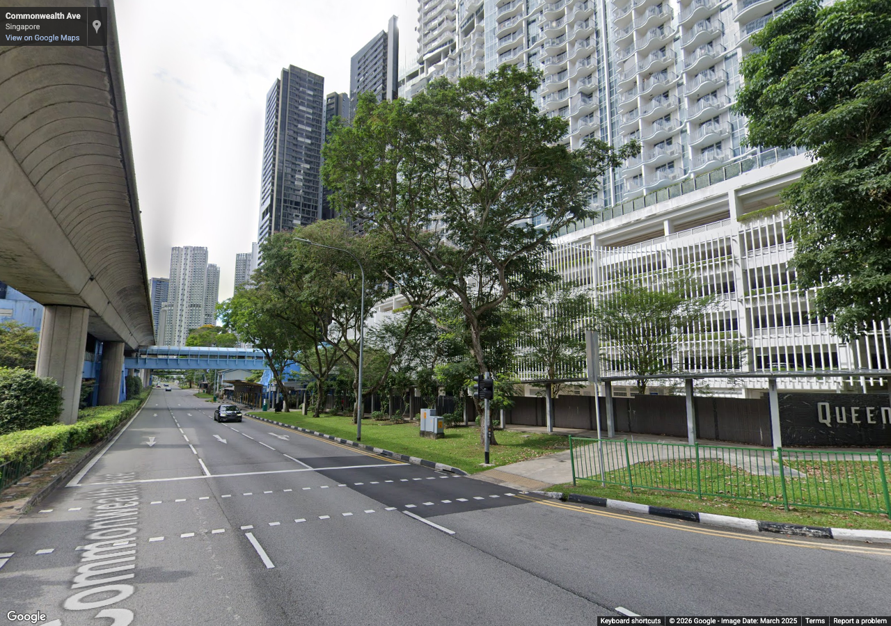
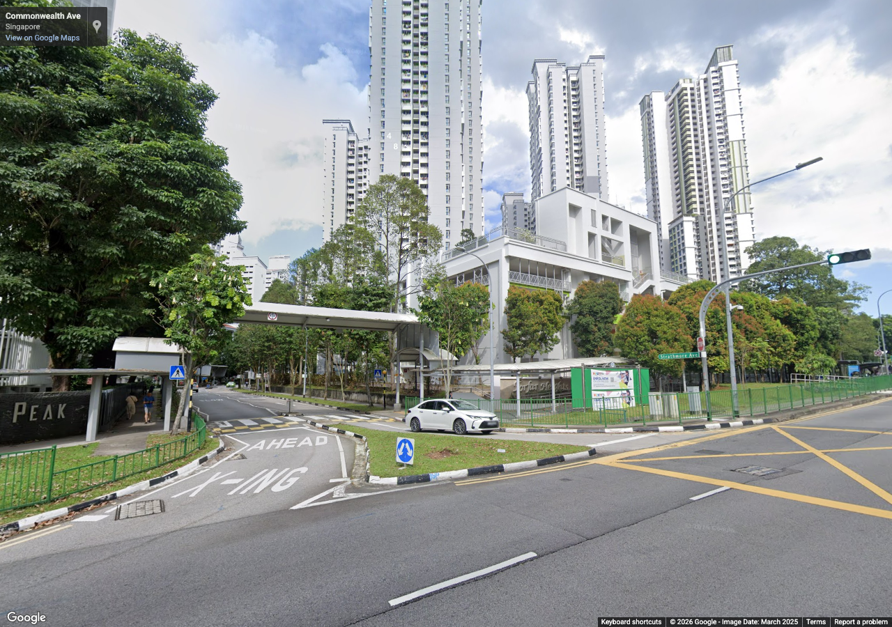
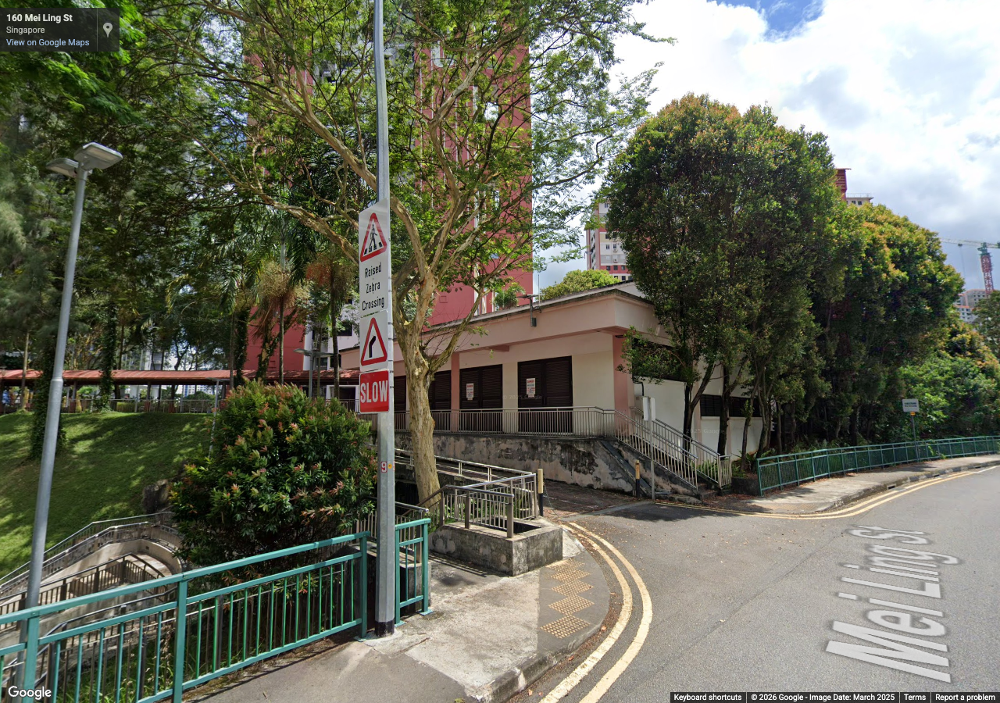
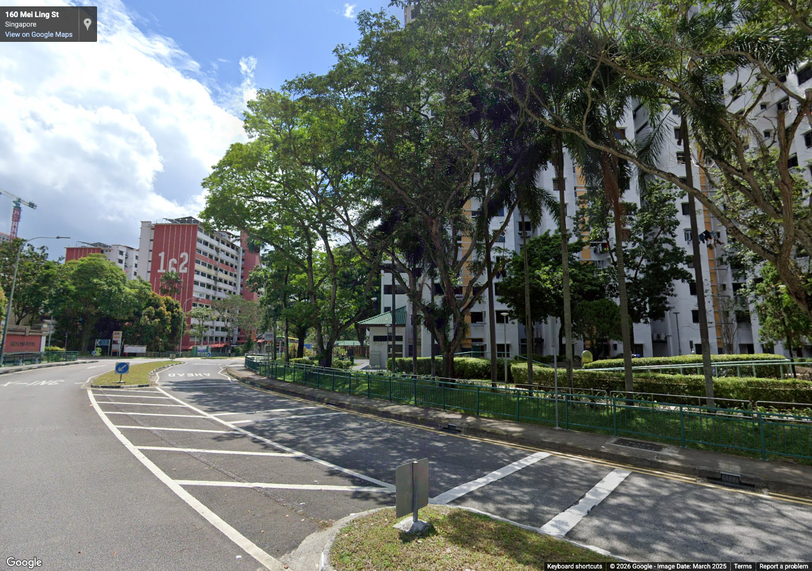

queenstown-detail-retries-03
Authorized reference screenshots. Attribution retained. Open full-size images to review clarity; capture success alone is not visual acceptance.

station-clear-0-retry — Replacement for rejected overlay/stale frame; review before use
Source 2025-03, heading 0°, pitch 8°, zoom 1. Metadata / review

station-clear-90-retry — Replacement for rejected overlay/stale frame; review before use
Source 2025-03, heading 90°, pitch 8°, zoom 1. Metadata / review

stirling-180-retry — Replacement for rejected overlay/stale frame; review before use
Source 2025-03, heading 180°, pitch 8°, zoom 1. Metadata / review

stirling-270-retry — Replacement for rejected overlay/stale frame; review before use
Source 2025-03, heading 270°, pitch 8°, zoom 1. Metadata / review